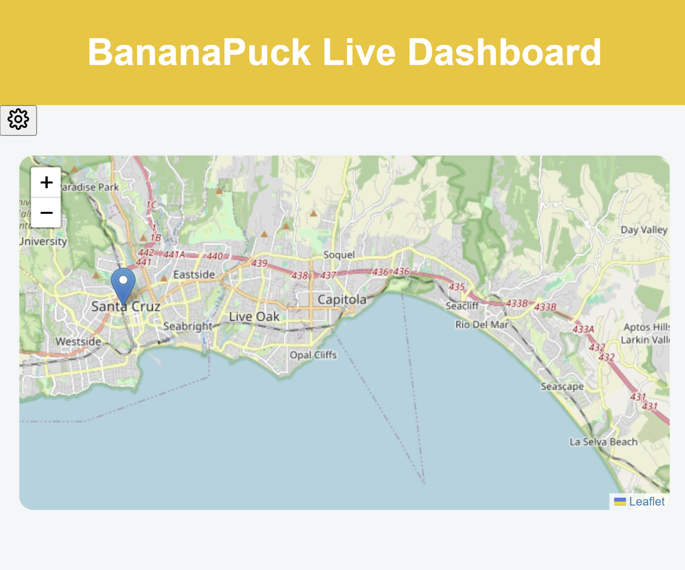
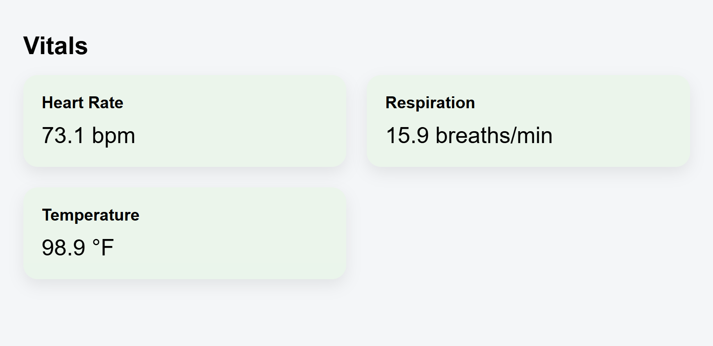
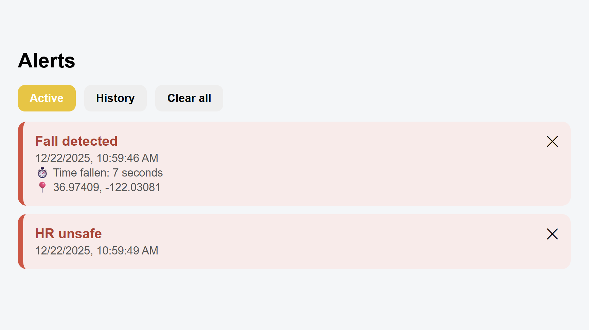
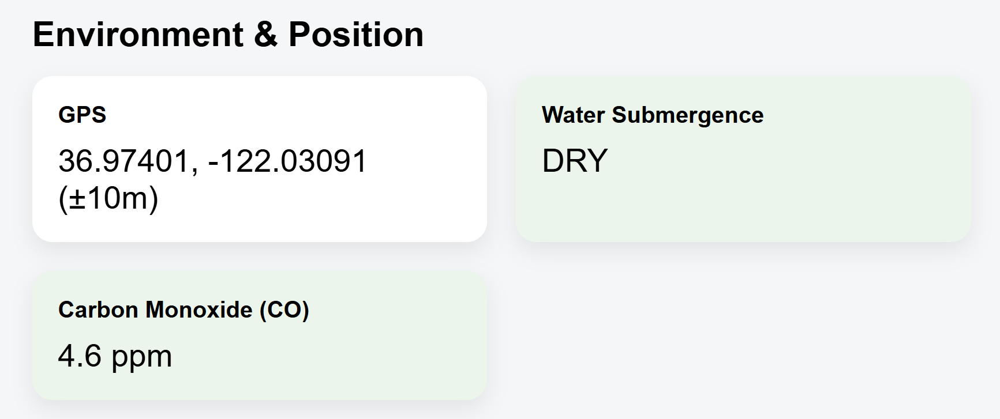

BananaPuck
Chest-worn assistive monitoring device for elderly & rehabilitation patients
Overview
BananaPuck is a compact, adhesive wearable designed to continuously monitor physiological signals, movement, and environmental context for elderly individuals and patients recovering from injury or surgery.
The system enables early detection of health risks while preserving user independence, extending caregiver awareness beyond clinical environments and into everyday life.
How It Works
Embedded sensors collect real-time data including heart rate, respiration, temperature, motion, orientation, and GPS location. Data is processed by an onboard microcontroller and transmitted wirelessly to a cloud backend.
Caregivers access this information through a web-based dashboard providing live status, intelligent alerts, and historical trends.
Why It Matters
Many medical emergencies are preceded by subtle physiological or behavioral changes that go unnoticed. BananaPuck captures these early indicators, allowing caregivers to intervene before critical events occur.
The system balances safety and autonomy by providing continuous monitoring without restricting daily activity.
Caregiver Dashboard
The BananaPuck web dashboard presents live and historical patient data in a clear, actionable format — designed for rapid interpretation under high-stress conditions.
Live Location Map
A real-time map view displays the patient’s current GPS location, enabling fast response in the event of an emergency or fall.

Alerts & Event Tracking
Critical alerts such as fall detection or unsafe heart rate conditions are surfaced immediately, along with timestamps and contextual data to reduce false positives and alert fatigue.

Vitals Monitoring
Heart rate, respiration, and temperature are continuously tracked and displayed using clear visual cards optimized for rapid assessment.

Environment & Context
Environmental panels track water submergence, carbon monoxide levels, and GPS accuracy confidence — additional context for patient safety.

Sensor Fusion & Fall Detection
Fall detection is implemented using accelerometer and gyroscope data combined with temporal thresholds and post-event motion analysis.
If movement is detected after a fall-like event, alerts are automatically de-escalated to prevent unnecessary caregiver intervention and reduce alarm fatigue.
Power & Wearability
BananaPuck is designed to be lightweight, unobtrusive, and comfortable for extended wear. Firmware scheduling and sensor polling are optimized to maximize battery life while maintaining continuous monitoring capability.
Project Presentation
The following presentation provides a deeper technical and design overview of BananaPuck, including system architecture, design decisions, and future development plans.
Future Work
- Expanded physiological sensing (SpO2, respiration rate)
- Machine learning–based activity classification
- Predictive fall-risk modeling from longitudinal data
- Clinical trials and user feedback integration
- Miniaturized hardware revision for improved comfort